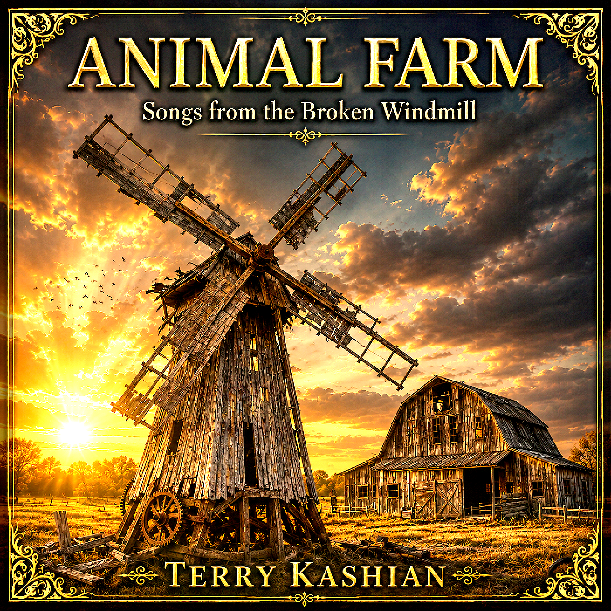
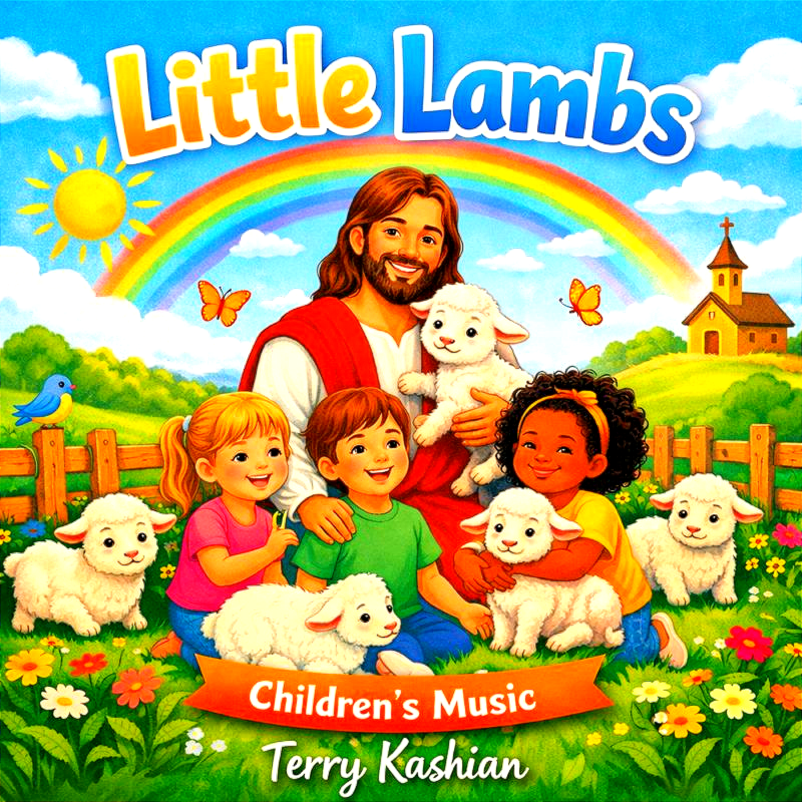

Albums
Terry Kashian Albums
Explore three complete musical collections.
Complete Collections
Choose an album
The Names of God
Songs centered on the beauty, character, and revealed names of God.
Listen on Bandcamp
Animal Farm
Songs from the Broken Windmill, a dramatic and symbolic musical collection.
Listen on Bandcamp
Little Lambs Children’s Music
A joyful collection of songs created especially for children and families.
Listen on Bandcamp